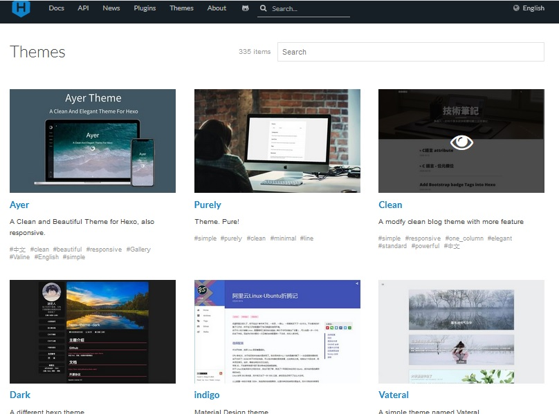
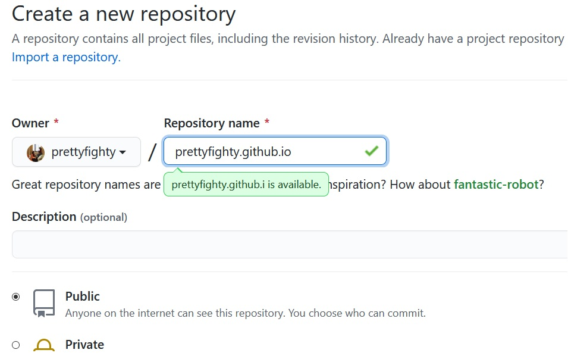
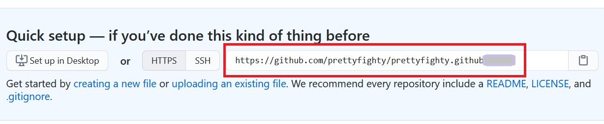
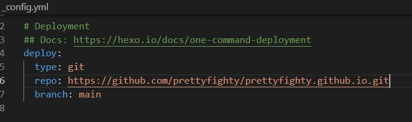
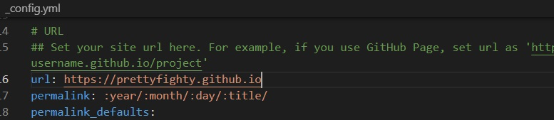

環境要求
先確認你的電腦已經安裝
Git（若連結失效，請按ｉ搜尋
git，應該就會找到我寫的安裝教學文章）Node.js(版本最好是12.0以上)（若連結失效，請按ｉ搜尋
「node」，應該就會找到我寫的安裝教學文章）並且到GitHub官方網站申請一個自己的帳號
Hexo
安裝
- 參考Hexo官方網站
打開Ubuntu輸入npm install -g hexo-cli後按Enter，就會開始跑安裝。
安裝完成後可以輸入hexo --version，可以看到目前相關套件的版本。
$ hexo --version
hexo-cli: 4.2.0
os: Linux 4.4.0-19041-Microsoft linux x64
node: 14.16.1
v8: 8.4.371.19-node.18
uv: 1.40.0
zlib: 1.2.11
brotli: 1.0.9
ares: 1.16.1
modules: 83
nghttp2: 1.41.0
napi: 7
llhttp: 2.1.3
openssl: 1.1.1k
cldr: 37.0
icu: 67.1
tz: 2020a
unicode: 13.0
創建部落格
使用終端機指令
cd切換到想要開資料夾的路徑輸入
hexo init your_blog_name（your_blog_name是你要新增的資料夾的名稱）cd your_blog_name切換到剛建立的資料夾npm install安裝相關套件hexo s啟動伺服器（第一次啟動時，會跳出windows安全性警訊，按「允許存取」）打開瀏覽器，於網址列輸入
localhost:4000即可打開剛創建的部落格
更換主題
在Hexo Themes可以看到很多種主題可供選擇，大部分的點進去都可以看到該主題在部落格瀏覽時的樣式。

找到喜歡的之後（通常這個步驟最花時間…），點主題的名字可以連結到該主題的GitHub頁面，這裡通常會有該主題作者的介紹和使用方式說明。
這個部分也要花蠻多時間研究的，特別是想要做客製化的部分，還需要懂一些HTML、CSS和JavaScript或是jQuery才改的動。
（每個主題的安裝方法可能不盡相同，請以該主題GitHub首頁說明為主）
這邊以paper這個主題當作示範
在部落格的資料夾路徑下，輸入
cd themes切換到主題的資料夾git clone git@github.com:random-yang/paper.gitnpm install hexo-renderer-jade hexo-renderer-stylus --save用編輯器（例如VScode）打開
_config.yml，然後修改以下項目：
theme: paper
highlight:
hljs: true
enable: true
line_number: false
auto_detect: true
tab_replace: ''
- 在Ubuntu輸入
hexo clean && hexo s
此時打開瀏覽器，網址列輸入localhost:4000應該就能看到你的部落格換成paper主題了～
新增文章
輸入hexo new "文章名稱"會在source/_posts項目下創立新增的文章檔案，這是一個md檔（markdown）。
裡面可以輸入title（發布的文章名稱）、date（發布日期時間）、categories（文章類別）、tags（標籤）
關於markdown的使用方式，可以參考以下連結：
將部落格佈署到GitHub
安裝 deploy git 套件
- 在Ubuntu輸入
npm install hexo-deployer-git --save
創建一個與username同名的repository
登入GitHub之後，在右上角的＋可以點選「New repository」
Repository name取名為
帳號名稱.github.io（帳號名稱即為左邊Owner名稱）

- 按下「Create repository」，選HTTPS，然後把右邊那條連結複製起來

修改_config.yml檔
- 打開
_config.yml，將剛剛複製的網址貼到repo去

推上GitHub
- Ubuntu輸入
hexo g -d
若出現
*** Please tell me who you are.
Run
git config --global user.email "you@example.com"
git config --global user.name "Your Name"
to set your account's default identity.
Omit --global to set the identity only in this repository.
表示之前沒設定過git的config檔案，只要照著輸入
git config --global user.email "你的email"
git config --global user.name "你的名稱"
然後再推上去一次即可。
過程中可能會出現fatal: Authentication failed for ...，可以試著改用Git-bash切換到該資料夾，然後再跟著步驟4. 創完Repository時的頁面，依序輸入
git remote add origin https://github.com/...
git remote add 遠端分支 遠端連結
git branch -M main
將本地分支改名為main
git push -u origin main
git push -u 遠端分支 本地分支
這裡應該會被要求輸入GitHub的帳號和密碼
- 回到GitHub的repository頁面，在Settings裡面的Pages應該可以看到
Your site is published at https://帳號名稱.github.io
再次修改_config.yml檔
- 打開
_config.yml，將url改成上面這個網址

大功告成，未來更新文章之後，輸入hexo clean && hexo g && hexo d就可以推上GitHub更新部落格囉～
補充：在Ubuntu根目錄
~裡面有個.bashrc檔案，可以在裡面設定alias hs='hexo clean && hexo g && hexo s' alias hd='hexo clean && hexo g && hexo d'未來要在本機開啟部落格時可以直接打
hs；更新至GitHub時打hd就可以啦～是不是輕鬆很多！
轉載請註明來源。